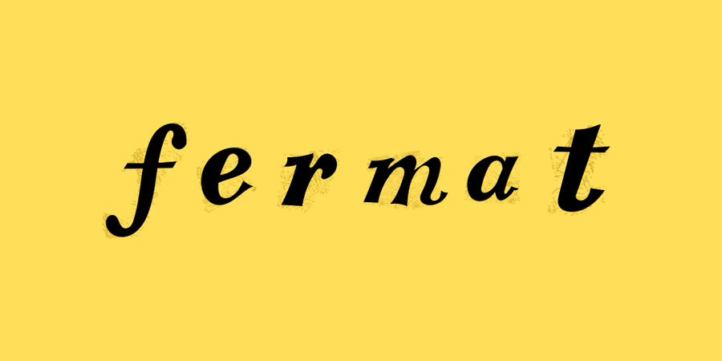

September 25th, 2026

I did not grow up thinking I would study math at an undergraduate level, or that I would pursue it after high school.
I always considered mathematics a subject which I was moderately good at, and which was usually pretty boring in high school. It was also the subject that was the closest to economics, which I really enjoyed. I was interested in economics early, and when I first encountered the Lodha Genius Programme at Ashoka University, I chose the mathematics track largely because it felt like the most natural way to understand the mathematical ideas behind the economics I was already interested in. I was not particularly interested in doing science for its own sake.
Then I started loving mathematics. It became abstract enough to be interesting and useful without needing to be reduced to an application.
I found myself sitting in courses that were far removed from anything I had encountered in school. I loved studying number theory with Professor Shanta Laishram, I loved studying abstract algebra. I remember sitting in graduate-level lectures as a high school student and realizing how strangely incomplete my picture of mathematics had been. There was this enormous intellectual world sitting behind the relatively small collection of techniques I had been taught in school.
The part that stayed with me was the timing I discovered this love.
I discovered the existence of olympiad mathematics, IOQM, RMO, INMO, and institutes like ISI, CMI and the rest of that ecosystem extraordinarily late. I did not even know that these pathways existed until Class 12. I cleared IOQM that year, but a family emergency meant I could not sit the next stage (RMO), and by then there was no real opportunity to start again. I had found something I loved at almost exactly the point when school was already telling me to move on to something else.
I returned the following year as a research apprentice and teaching assistant at Lodha Genius, working with Professor Shanta Laishram at the Indian Statistical Institute, while continuing to study mathematics myself and preparing students for international competitions. The more time I spent around people who had been doing mathematics seriously for years, the more obvious the problem became to me: discovering mathematics is often less about ability than about exposure. A student cannot choose a path they have never been told exists.
I met Ishaan Harish in Class 9, and what brought us together initially was economics. Mathematics came later for both of us. Ishaan found his footing towards the end of Class 11 and has stayed with it since, now preparing for ISI and CMI. He had grown up doing the usual school olympiads, but had never encountered the much larger world of olympiad mathematics as well (same as me).
That coincidence has stayed with us. We both arrived at mathematics late. We both found it largely by accident. And we both had the experience of discovering, after years of school, that there was an entire subject behind the subject we thought we knew. I keep thinking about what would have happened if someone had told us about it earlier.
Not necessarily so that we would have won competitions or become mathematicians. Those things are secondary. Perhaps we would simply have spent a few more years asking harder questions. Perhaps we would have learned earlier that being unable to solve a problem is not evidence that you are bad at mathematics. Perhaps we would have discovered that there are forms of thinking available to us that school had never had a reason to show us.
That is ultimately why Ishaan and I started Project Fermat.
It comes from a fairly personal frustration with how accidental our own discovery of mathematics was. We were fortunate enough to eventually find teachers, professors, programmes and communities that opened the subject up for us. But we found them years later than we should have.
If someone had told us sooner, our relationship with mathematics might have been very different.
We want to be that person for someone else.